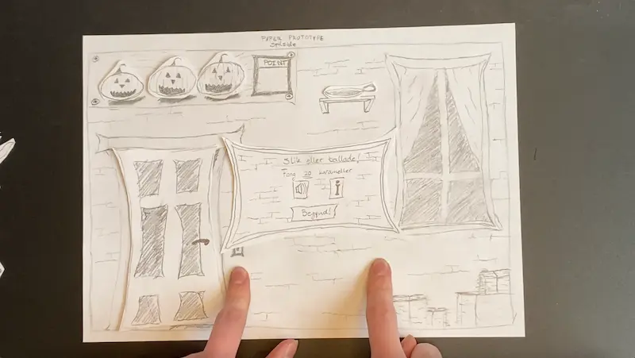

Denne temaopgave bestod af at bygge et spil ved at bruge HTML, CSS og javascript. Under hele temaet fik holdet tildelt en masse små delopgaver, som til sidst gjorde, at jeg kunne konstruere et spil. Jeg har brugt Adobe Illustrator, til at tegne egen vektorgrafik. Opgaven skulle afsluttes ved at kode en hjemmeside der opsummerede alle assets, lydeffekter, aktvitets- og state-machine-diagram.
Mit endelige produkt er et børnevenligt spil der handler om at fange slik, og undgå at ramme spøgelserne, inden tiden er omme. Jeg har bevæget mig mest i at animere i CSS, generere ideer og producere indhold i dette tema.
Se temaopgaven Note: Menumusik starter ikke automatisk pga. browsergrundindstillinger. Åbn en underside, og skift tilbage til spillet.Her lærte vi grundlæggende CSS animation og hvordan vi kombinerer det med javascript, som vi også lærte i dette tema. Temaopgaven var at producere et spil og en hjemmeside dertil, hvor vi viste assets, statemachine-diagram og vores designprocess.
Det mest nye for mig, var at bruge javascript til at interagere med DOM-elementer. Og at arbejde med Ai. Vi har haft en grundig gennemgang af CSS-animations, og hvordan de bruges sammen med javascript. Såsom en løsning med både container og en sprite, idet man ikke kan køre to animationer på ét element.
Vi har selv skulle producere spillets assets, herunder sprites, knapper og andet grafik. Dette har jeg gjort i Adobe illustrator 2024.
Under forløbet har vi haft om nye designprincipper som bouba-kiki og babyface, der fremmer målgruppen. Inden vi byggede spillet, lavede vi en kort og lille opgave der bestod af 16 forskellige animationer. Min løsning kan ses nederst på siden.
 Projektets moodboard
Projektets moodboard Første par skitser
Første par skitserEfter jeg havde fundet på en idé til et spil og dets målgruppe, gik jeg i gang med min paper prototype. Den bestod af en baggrund, en pop-op-menu og tre UI-elementer; liv, point og tid. Du kan se videoen her. Derefter begynder jeg at tegne og skabe grafik og assets i Ai. Her kan du se mit første udkast til menuskærkem, og min endelige løsning. Under dette lærte vi om animationer i CSS på KEA. Vi lærte at clip-maske egen grafik så man kunne bruge på sine UI-elementer som timeren.
Før javascriptkodefasen har jeg udarbejdet et aktivitetsdiagram, som forklarer simplificeret hvordan koden bør fungere, og hvad der skal ske. Dette ses her. Det forklarer at der skal foregå nogle lyde og animationer når man klikker på en sprite, og at der skal gives eller trækkes et point. Dette system looper, indtil tiden er gået, eller variablen liv er lig med 0.
Screendump fra paperprototypen Endelige aktivitetsdiagram
Endelige aktivitetsdiagramKort efter begyndte vi med det store javacscript, som viste sig ikke at være så udfordrende. Vi har brugt det i forbindelse med at tilføje klasser og fjerne dem igen i funktioner, eventlisteners og matematik i javascript. Under denne fase har vi haft om DRY-pricippet, og hvorfor det er vigtigt hele tiden at have i baghovedet. Herunder this og const.
I den afsluttende fase af projektet fik jeg ros, og fik at vide jeg skulle tilpasse min kode yderligere til DRY-princippet – i form af this, hvilket ses i den seneste løsning.